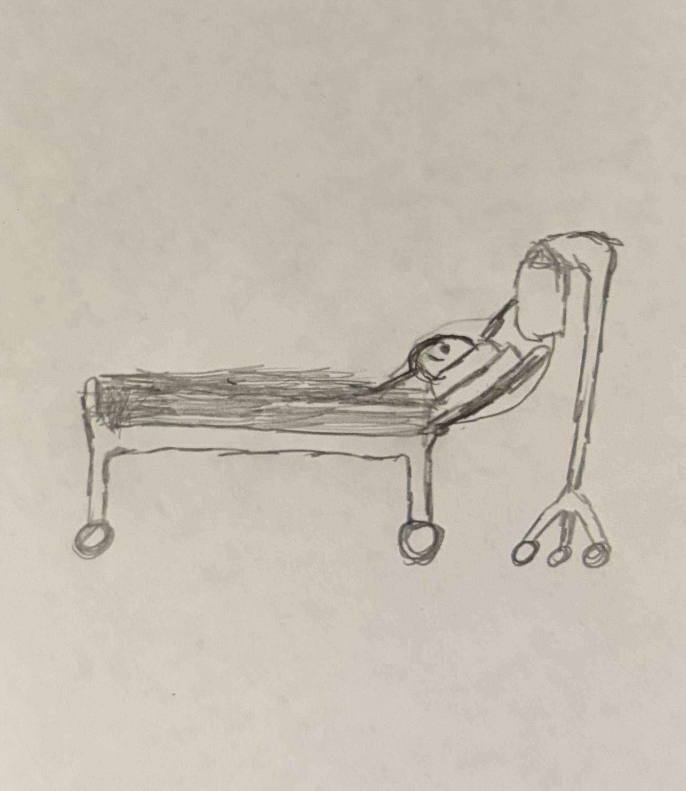

My mom and I were watching TV when she noticed a lump on the side of my neck. She asked me how long it had been there and I said I didn't know. This was in about 2019 or so (if I remember correctly). I said I had only noticed it fairly recently, but in all honesty, I had noticed it quite a while ago. Unless I'm misremembering, I think I had just finished middle school at the time. I had noticed that lump in elementary school, but I didn't really think anything of it and didn't tell my parents because I didn't know any better. I'm not really sure why I lied, but thankfully the lie itself didn't cause any problems. We went in to have it checked out and were told that it could be cancerous. That freaked my parents out, but I wasn't too phased for whatever reason. We had it ultrasounded and were told that it should be biopsied. This was my first surgery, and again, I wasn't super nervous. That was until I was actually in the hospital bed, being prepped for surgery. Even then though, I was only a little nervous. After getting the biopsy results some days later, I was diagnosed with Hodgkins Lymphoma (which is thankfully a quite treatable form of Lymphoma)